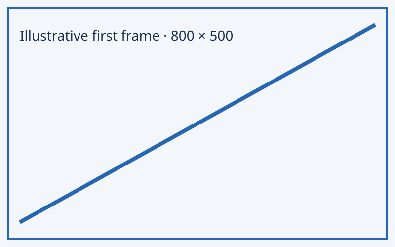
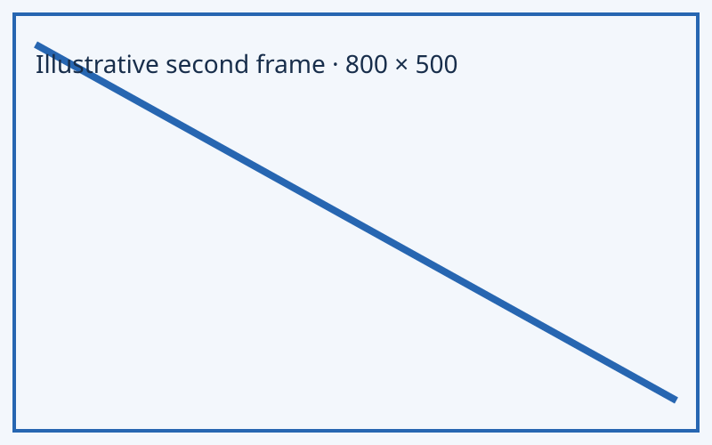
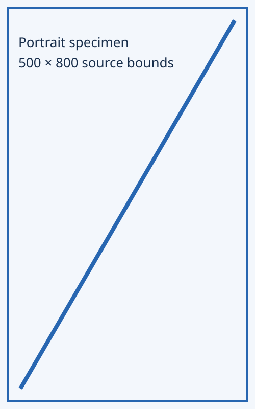

source geometry and reserved actions
Keep the source visible and the action reachable.
The phone dock occupies a real row. The body scrolls above it; this page contains illustrative data only.
Media keeps its own shape
Illustrative source geometry, not a photograph. Source dimensions are real and reserve the stage before loading.


Position
View a portrait source

The specimen buttons change presentation only. Playback, licensing and interpretation belong to the application.
Try the last control
Scroll to this field and reach it with Tab. Its focus ring must remain above the dock. The field changes only the specimen; it is not saved.
Short screens let the dock scroll, rather than clipping destinations. Native links and actions retain their semantics.